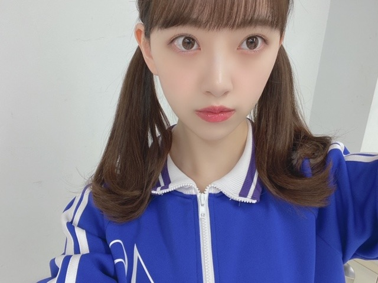

2020/0314Satテレパシイ

まなつさん☺︎

明日の乃木坂工事中も観てください~！
1期生vs2.3.4期生だったのですが
ゲームも本気で楽しくやりたい人なので
がんばりました☺︎
しばらくはまったり過ごしたいな。笑

今日、雪降ってきてびっくりしました...
春なのに！
寒いので皆さん体調にはお気をつけてください！
最近はプライベートで
エチュードハウスで色々コスメ買えたし
レッスン着も買えたしかわいいイヤリングも見つけて
私はハッピーです。笑
ダンスも最近やってて、かわいいレッスン着きると頑張れます☺︎！
スニーカーも新調したいな~
もっとダンス上手くなりたいしいろんなジャンルに挑戦したいです✨

今日は千と千尋の神隠しを観よう！
そんな気分
ではは
2020/03/14 16:06
コメント(368)
ブログ更新ありがと！
ツインテールかわいすぎる
乃木中絶対観るね！
ツインテールかわいすぎる
乃木中絶対観るね！
ハクのおまじないおにぎりを
食べたような
気持ちになれる？のよ。私たち。

食べたような
気持ちになれる？のよ。私たち。
乃木坂工事中最高最強至高孤高国宝！！！！！！！！！！！！！！
いつも未央奈ちゃんを見てて美容にこだわってるなぁ〜っていつも思います！（髪とか肌とかとてもきれいだからそう思っています）質問なのですが、肌をきれいに保つために何かしていることはありますか？
未央奈ちゃんのツインテールもとても似合ってて
可愛い
コスメとレッスン着、イヤリングなどを買ったことを
ブログに載せるのは、女性アイドルらしさが伝わって
好印象だよ
乃木坂工事中は先週も観たいし、今週放送も観るね
可愛い
コスメとレッスン着、イヤリングなどを買ったことを
ブログに載せるのは、女性アイドルらしさが伝わって
好印象だよ
乃木坂工事中は先週も観たいし、今週放送も観るね
いつもインスタとかでもメイク見てます〜！！
自然な眉毛の描き方とかあったら知りたいです(o^-^)
自然な眉毛の描き方とかあったら知りたいです(o^-^)
乃木中楽しみ
必ず見ますね
ジャージ姿もかわいいですね
必ず見ますね
ジャージ姿もかわいいですね
未央奈さん更新お疲れ様です❗️
レッスン頑張って下さい‼️
みおなちゃん、こんにちは。
今日の乃木坂工事中、僕は絶対見るね。1期生vs2.3.4期生のゲーム対決、楽しみにしています。
2枚目の写真のみおなちゃん、ツインテール似合っていて、めっちゃかわいいです。
みおなちゃん、体調に気をつけて仕事頑張ってね。
またコメントするね。
今日の乃木坂工事中、僕は絶対見るね。1期生vs2.3.4期生のゲーム対決、楽しみにしています。
2枚目の写真のみおなちゃん、ツインテール似合っていて、めっちゃかわいいです。
みおなちゃん、体調に気をつけて仕事頑張ってね。
またコメントするね。
チャァオ～～!☆彡
プリンセスみおちゃんは～～～⤴️⤴️⤴️
お酢料理は好き～～～⤴️⤴️❔❤️❤️❤️❤️❤️笑顔
おいらは、めちゃめちゃ大好きです❕笑
☆おすまし！より☆彡
堀ちゃん、お美しい！
未央奈だいすし〜
こんばんはー！
テレパしい。良い曲だね！歌詞が深い。
真夏さん。笑
2人の絡み見てておもしろそう。
あー、ツインテールかわいっ。尊い。
乃木中みるぅ〜！！！いつも楽しみにしてまっせ♪
隠れジョージおるやん！笑
デコ出しみおちゃんかわいい。。
みざるポーズ？
絵文字のみざる、きかざる、いわざるかわいいよね。☺️
昨日はすごい寒かったー！
ほんとにホワイトday！でしたね(笑)
山のほうみたら雪山になってた。
体調気遣ってくれてありがとう。
みおちゃんもね(^-^)
かわいいイヤリング楽しみ♪
こっちもハッピーです。笑
みおちゃんのダンスも楽しみ！ターン？が綺麗な人って素敵✨
千と千尋！
あの夏へ いいよねー
ピアノのとこがちょっぴり切なくてでも聴いていたくて。って感じで好きー！
久石譲さんのコンサート行きたいなぁ。
ではではは
テレパしい。良い曲だね！歌詞が深い。
真夏さん。笑
2人の絡み見てておもしろそう。
あー、ツインテールかわいっ。尊い。
乃木中みるぅ〜！！！いつも楽しみにしてまっせ♪
隠れジョージおるやん！笑
デコ出しみおちゃんかわいい。。
みざるポーズ？
絵文字のみざる、きかざる、いわざるかわいいよね。☺️
昨日はすごい寒かったー！
ほんとにホワイトday！でしたね(笑)
山のほうみたら雪山になってた。
体調気遣ってくれてありがとう。
みおちゃんもね(^-^)
かわいいイヤリング楽しみ♪
こっちもハッピーです。笑
みおちゃんのダンスも楽しみ！ターン？が綺麗な人って素敵✨
千と千尋！
あの夏へ いいよねー
ピアノのとこがちょっぴり切なくてでも聴いていたくて。って感じで好きー！
久石譲さんのコンサート行きたいなぁ。
ではではは
忙しいなかでもこまめにブログ更新してくれるみおなちゃん好きですアナスターシャめちゃくちゃお気に入りです！！
応援してます(^^)
応援してます(^^)
みおなちゃん、かわいいです❤︎
おはよう！そして1日お疲れ様
朝から与田ちゃん、さくらちゃんと撮影
お疲れ！
寝起きすっぴん貴重。
寝る時は眼鏡しながら寝るんだね
おしゃれ！
朝から与田ちゃん、さくらちゃんと撮影
お疲れ！
寝起きすっぴん貴重。
寝る時は眼鏡しながら寝るんだね
おしゃれ！
みおな
予備自衛官５年勤務賞状を、もらいました。
埼玉地方本部から
予備自衛官５年勤務賞状を、もらいました。
埼玉地方本部から
みおなちゃんブログ更新ありがとうございます
わたしも最近ダンスを始めました！いつか気が向いたらレッスン着見たいです♡♡
わたしも最近ダンスを始めました！いつか気が向いたらレッスン着見たいです♡♡
ブログ更新ありがとう！
乃木中楽しみ〜！！予告だけでもとっても面白そうだった！
ダンスの練習頑張ってください！！新しいもの買ったらやる気出るよね〜
アナスターシャ、100万回再生おめでとう！！
めっちゃ好きな曲です！
乃木中楽しみ〜！！予告だけでもとっても面白そうだった！
ダンスの練習頑張ってください！！新しいもの買ったらやる気出るよね〜
アナスターシャ、100万回再生おめでとう！！
めっちゃ好きな曲です！
お疲れ様〜!早いもので、２期生ライブ終わって１週間経ったね。ところで今月でレコメン!のパーソナリティ卒業されると知り、私は翌日からのYouTubeでしか聞けないのですが、のりさんと堀ちゃんのトークを聞いてると現場が楽しそうなのが浮かびます。でも２人でのトークも聞けなくなると残念だけど、残り２週も楽しみに待ってます。
(レコメン!のホームページからで無く、申し訳御座いません)。
(レコメン!のホームページからで無く、申し訳御座いません)。
可愛いを飛び越えてるよね。
綺麗でもあり、可愛いでもある。
本当に毎日可愛いなぁ
綺麗でもあり、可愛いでもある。
本当に毎日可愛いなぁ
未央奈さん、私の地元では昨日寒いくらいでしたが、関東では少し雪模様になったようですね。
この時期は寒暖差が大きいから、お互いに体調には気を付けて行きましょう。
(^ー^)
CRYSTALより。
この時期は寒暖差が大きいから、お互いに体調には気を付けて行きましょう。
(^ー^)
CRYSTALより。
ブログ更新ありがとうございます。
アナスターシャ、ゆっくりと咲く花を聞きました。最高です。
これからも応援し続けます。
アナスターシャ、ゆっくりと咲く花を聞きました。最高です。
これからも応援し続けます。
未央奈ちゃんのメイクいつも参考になるなあ！大好き！
乃木坂工事中わず
ツインテールすごい可愛かった
レコメンのパーソナリティお疲れ様でした
レコメンを毎週聴いていてとても楽しかったです
ノリさんと未央奈さんの掛け合いがとても好きでした笑
季節の変わり目なので体調にはお気をつけください
ツインテールすごい可愛かった
レコメンのパーソナリティお疲れ様でした
レコメンを毎週聴いていてとても楽しかったです
ノリさんと未央奈さんの掛け合いがとても好きでした笑
季節の変わり目なので体調にはお気をつけください
堀ちゃんこんばんは！
乃木坂工事中見ましたー！
ツインテール久々に見た気がします、やっぱりツインも可愛いな〜( ´ ▽ ` )♩
以前もやっていたと思いますが、襟をしっかり折ってるのもアクセントになってオシャレですね、堀ちゃんの個性って感じです(o^^o)
ポーカーフェイスは半信半疑です、堀ちゃんは表情豊かなイメージなので(o^^o)笑
プレッシャーを感じると逆に無表情になっちゃうことってありますよね( ´ ▽ ` )
翻訳機のゲーム、あれめっちゃ難しそうですね笑
特にマヨネーズは普段から日本語としてマヨネーズって言ってる言葉なので、英語として認識させるのはかなり難易度高そうです( ´ ▽ ` ;)
しかしまあやさんは奇跡を呼ぶ人ですね〜笑
そして来週の予告の堀ちゃん映像見てさらにめっちゃ楽しみですー！全力の堀ちゃんめっちゃ好きなので！
ゲームとなれば本気で勝って、本気で面白く楽しくしたいですよね(o^^o)
来週が待ちきれない〜( ´ ▽ ` )♩
後半戦はどうやらハードそうでしたね、まったりしてくださいな(o^^o)
最近はまたちょっと寒いですね、関東は雪まで降ったんですか〜( ´ ▽ ` )
花粉も飛んでて気温も低いと中々厳しい環境ですね、鼻や喉など体調気をつけましょう、お互いに(o^^o)
堀ちゃんのレッスン着姿も見てみたいです〜、そして何より堀ちゃんのダンスどんどん見たいです！
どの曲をとっても、堀ちゃんのダンスって綺麗でめちゃくちゃ惹かれるんです(o^^o)♩
ゆっくりでシンプルな振りのときも、堀ちゃんの動きでプラスアルファの魅力が足されているように感じます！
それに現状維持じゃなくて、シングルごとにどんどんレベルが上がってて、ますます惹きつけられてます！( ´ ▽ ` )
明日のCDTVも楽しみです、堀ちゃんの動きに注目しています！(o^^o)
さてさて、世の中いろいろありますが、小さな幸せを見つけて大切にして、なるべく楽しく穏やかに過ごしていきましょう( ´ ▽ ` )
ではは！またコメントさせてくださいー！
乃木坂工事中見ましたー！
ツインテール久々に見た気がします、やっぱりツインも可愛いな〜( ´ ▽ ` )♩
以前もやっていたと思いますが、襟をしっかり折ってるのもアクセントになってオシャレですね、堀ちゃんの個性って感じです(o^^o)
ポーカーフェイスは半信半疑です、堀ちゃんは表情豊かなイメージなので(o^^o)笑
プレッシャーを感じると逆に無表情になっちゃうことってありますよね( ´ ▽ ` )
翻訳機のゲーム、あれめっちゃ難しそうですね笑
特にマヨネーズは普段から日本語としてマヨネーズって言ってる言葉なので、英語として認識させるのはかなり難易度高そうです( ´ ▽ ` ;)
しかしまあやさんは奇跡を呼ぶ人ですね〜笑
そして来週の予告の堀ちゃん映像見てさらにめっちゃ楽しみですー！全力の堀ちゃんめっちゃ好きなので！
ゲームとなれば本気で勝って、本気で面白く楽しくしたいですよね(o^^o)
来週が待ちきれない〜( ´ ▽ ` )♩
後半戦はどうやらハードそうでしたね、まったりしてくださいな(o^^o)
最近はまたちょっと寒いですね、関東は雪まで降ったんですか〜( ´ ▽ ` )
花粉も飛んでて気温も低いと中々厳しい環境ですね、鼻や喉など体調気をつけましょう、お互いに(o^^o)
堀ちゃんのレッスン着姿も見てみたいです〜、そして何より堀ちゃんのダンスどんどん見たいです！
どの曲をとっても、堀ちゃんのダンスって綺麗でめちゃくちゃ惹かれるんです(o^^o)♩
ゆっくりでシンプルな振りのときも、堀ちゃんの動きでプラスアルファの魅力が足されているように感じます！
それに現状維持じゃなくて、シングルごとにどんどんレベルが上がってて、ますます惹きつけられてます！( ´ ▽ ` )
明日のCDTVも楽しみです、堀ちゃんの動きに注目しています！(o^^o)
さてさて、世の中いろいろありますが、小さな幸せを見つけて大切にして、なるべく楽しく穏やかに過ごしていきましょう( ´ ▽ ` )
ではは！またコメントさせてくださいー！
未央奈(・∇・*)ｶﾜｲｲﾅｧ-
来週は未央奈輝く回やな(^3^)/
ツインテール似合ってるなぁ
ツインテール似合ってるなぁ
レッスン頑張ってね！！
これからも歌番組などなど楽しみ！
乃木坂工事中、最高だったよ
未央奈ちゃん、カメラ抜かれてないところ(確か中田花奈さんがボール投げる前だったかな)で変顔してたよね！？
可愛かったよ
これからも歌番組などなど楽しみ！
乃木坂工事中、最高だったよ
未央奈ちゃん、カメラ抜かれてないところ(確か中田花奈さんがボール投げる前だったかな)で変顔してたよね！？
可愛かったよ
堀ちゃん 花粉症対策に！！ (^_^)
今 NHK あさイチ 観ていたら、
鼻の入り口に ワセリンを塗り、←綿棒で。
花粉をワセリンにくっつけたら、
花粉症の予防になります！！
一日 3~4回塗り直す。
使ったワセリンに花粉が付いてるから、
ご注意を。
詳しくは NHK あさイチ 3/16（月）午前 を
検索して下さい！！
少しでも、良くなるといいね！！ (^.^)/~~~
今 NHK あさイチ 観ていたら、
鼻の入り口に ワセリンを塗り、←綿棒で。
花粉をワセリンにくっつけたら、
花粉症の予防になります！！
一日 3~4回塗り直す。
使ったワセリンに花粉が付いてるから、
ご注意を。
詳しくは NHK あさイチ 3/16（月）午前 を
検索して下さい！！
少しでも、良くなるといいね！！ (^.^)/~~~
美女美しい！☺️
未央奈ブログ有難うー！
しかし、本当に綺麗で肌も綺麗。
TVで見てても楽しいし！
素晴らしい女性だなーってつくづく思う(^_^*)
お体にお気をつけて頑張って下さいね！
応援してまーす！！
しかし、本当に綺麗で肌も綺麗。
TVで見てても楽しいし！
素晴らしい女性だなーってつくづく思う(^_^*)
お体にお気をつけて頑張って下さいね！
応援してまーす！！
こんにちは未央奈はん！今日も楽しくね！
未央奈ちゃんありがとうございます‼頑張ります‼頑張って下さい！楽しみにしてます‼頑張ります‼頑張って下さい。頑張ります‼
未央奈ちゃん、ブログ更新ありがとう！
未央奈ちゃんのツインテール姿すごく可愛くて可愛くて･･･
私も女子なんですけど同性なのに気絶しそうでした
ツインテールを巻いた髪型の未央奈ちゃんも見てみたいな
今日はCDTVで保護色を披露するんだよね！
卒業曲なのにすっごく温かいし、ほっとするし、幸せになるし、幸せについて考えさせられるような素敵な曲だな、と聞く度に思うんだ！
毎日MV聴いてるので
今日のパフォーマンスも楽しみにしてます
どんな髪型の未央奈ちゃんが見られるかな～。
わくわくわくわく
リクエストすると～･･･ツインテール姿でパフォーマンスする未央奈ちゃんも見てみたいし、ストレートも見たいし、編み込みも見てみたいし！
あっ、巻き髪も見てみたいな
リクエスト多くてごめんなさい
楽屋での写真も楽しみにしてるね
未央奈ちゃんに質問です！
①この春、気になっているお洋服はありますか？
②未央奈ちゃんの私服すごく可愛くて私の好みなんですけどどこのブランドで買うことが多いですか？
③未央奈ちゃんってすごく美脚だなって思うんですけど心がけていることってありますか？
④最近気になっている後輩や絡んだ、または絡まれた後輩はいますか？
エピソード聞かせて欲しいです
⑤ディズニーで未央奈ちゃんおすすめのディズニーアトラクションやおすすめのフード、おすすめコーデ、好きなキャラクターを教えて下さい！
質問多くてごめんなさい
少しづつでも良いので答えてもらえると嬉しいです
宜しくお願いします！
今日もお仕事頑張ってくださいね
未央奈ちゃんのツインテール姿すごく可愛くて可愛くて･･･
私も女子なんですけど同性なのに気絶しそうでした
ツインテールを巻いた髪型の未央奈ちゃんも見てみたいな
今日はCDTVで保護色を披露するんだよね！
卒業曲なのにすっごく温かいし、ほっとするし、幸せになるし、幸せについて考えさせられるような素敵な曲だな、と聞く度に思うんだ！
毎日MV聴いてるので
今日のパフォーマンスも楽しみにしてます
どんな髪型の未央奈ちゃんが見られるかな～。
わくわくわくわく
リクエストすると～･･･ツインテール姿でパフォーマンスする未央奈ちゃんも見てみたいし、ストレートも見たいし、編み込みも見てみたいし！
あっ、巻き髪も見てみたいな
リクエスト多くてごめんなさい
楽屋での写真も楽しみにしてるね
未央奈ちゃんに質問です！
①この春、気になっているお洋服はありますか？
②未央奈ちゃんの私服すごく可愛くて私の好みなんですけどどこのブランドで買うことが多いですか？
③未央奈ちゃんってすごく美脚だなって思うんですけど心がけていることってありますか？
④最近気になっている後輩や絡んだ、または絡まれた後輩はいますか？
エピソード聞かせて欲しいです
⑤ディズニーで未央奈ちゃんおすすめのディズニーアトラクションやおすすめのフード、おすすめコーデ、好きなキャラクターを教えて下さい！
質問多くてごめんなさい
少しづつでも良いので答えてもらえると嬉しいです
宜しくお願いします！
今日もお仕事頑張ってくださいね
みおなちゃん、こんにちは。
乃木坂工事中、僕は見たよ。録画して見ました。団結力バトル２０２０でしたね。みおなちゃん、ツインテール似合っていて、めっちゃかわいかったです。
今日のCDTV、僕は絶対見るね。楽しみにしています。
みおなちゃん、体調に気をつけて仕事頑張ってね。
またコメントするね。
乃木坂工事中、僕は見たよ。録画して見ました。団結力バトル２０２０でしたね。みおなちゃん、ツインテール似合っていて、めっちゃかわいかったです。
今日のCDTV、僕は絶対見るね。楽しみにしています。
みおなちゃん、体調に気をつけて仕事頑張ってね。
またコメントするね。
たのしみ〜〜〜
乃木中みたぞ～！
メッチャ、ごっつい面白かった！
来週の予告の未央奈の顔すごかったぞ～！
メッチャ焦っていたね～（笑、笑）
いやぁ～来週が楽しみだぁ～
未央奈の大活躍期待しててイイ？
メッチャ、ごっつい面白かった！
来週の予告の未央奈の顔すごかったぞ～！
メッチャ焦っていたね～（笑、笑）
いやぁ～来週が楽しみだぁ～
未央奈の大活躍期待しててイイ？
乃木坂工事中見ました。
未央奈ちゃんツインテール似合っててかわいい～
リコーダー懐かしいな～
難しいですよね。僕もリコーダー苦手です。
最初に翻訳機をマイクと思って話してた未央奈ちゃんかわいい～
来週も続きですね。
未央奈ちゃんツインテール似合っててかわいい～
リコーダー懐かしいな～
難しいですよね。僕もリコーダー苦手です。
最初に翻訳機をマイクと思って話してた未央奈ちゃんかわいい～
来週も続きですね。
こんにちは‼︎
ブログ更新、ありがとうございます♪
コメントが遅くなってしまい、申し訳ありません…‼︎
毎回コメントしてるんだけど、もたもたしているうちに未央奈が既にブログを更新しているということが続いているここ数日(苦笑)。
そうそう、昨日の乃木坂工事中、観ましたよ‼︎
リコーダー、小学校卒業以来吹いたことないけど、結構難しそうですね‼︎
しかも、あのプレッシャーのかかるシチュエーション。
自分、失敗しちゃうかも(笑)。
英語発音認識対決も、面白かったです…‼︎
必ずしも、発音が上手な人が正しく認識されるわけじゃないところが面白いですよね♪
『機械に分かってもらう』技術が必要(笑)。
日本人が日本語を発音しても、認識されないことは多々ありますもんね‼︎
来週の後半戦も楽しみにしてます‼︎
さて、今日はCDTVの日ですね。
今帰宅途中だけど、間に合うかな？
一応録画してあるけど、できればリアルタイムで観たいな♪
ではでは、また。
明日も未央奈にとっていい1日になりますように♪
ブログ更新、ありがとうございます♪
コメントが遅くなってしまい、申し訳ありません…‼︎
毎回コメントしてるんだけど、もたもたしているうちに未央奈が既にブログを更新しているということが続いているここ数日(苦笑)。
そうそう、昨日の乃木坂工事中、観ましたよ‼︎
リコーダー、小学校卒業以来吹いたことないけど、結構難しそうですね‼︎
しかも、あのプレッシャーのかかるシチュエーション。
自分、失敗しちゃうかも(笑)。
英語発音認識対決も、面白かったです…‼︎
必ずしも、発音が上手な人が正しく認識されるわけじゃないところが面白いですよね♪
『機械に分かってもらう』技術が必要(笑)。
日本人が日本語を発音しても、認識されないことは多々ありますもんね‼︎
来週の後半戦も楽しみにしてます‼︎
さて、今日はCDTVの日ですね。
今帰宅途中だけど、間に合うかな？
一応録画してあるけど、できればリアルタイムで観たいな♪
ではでは、また。
明日も未央奈にとっていい1日になりますように♪
みおなちゃん更新ありがとう╰(*´︶`*)╯♡
写真もありがと〜(о´∀`о)
乃木中見たよー
ツインテール可愛すぎます
来週も楽しみです！
雪が降ったんだねー(ﾟoﾟ;;
気温の変化が激しいから体調に気を付けてね٩(๑❛ᴗ❛๑)۶
写真もありがと〜(о´∀`о)
乃木中見たよー
ツインテール可愛すぎます
来週も楽しみです！
雪が降ったんだねー(ﾟoﾟ;;
気温の変化が激しいから体調に気を付けてね٩(๑❛ᴗ❛๑)۶
CDTV、髪型変わっていたのに驚いた！
未央奈ちゃん、おはようございます♪
乃木坂工事中を見ました。
笛と壁当てと英語の発音のゲームを楽しみました。
笛はドが難しいのですね。
壁当てはストレートの握りで投げると
コントロールしやすいそうです。
英語の発音のゲームはマヨネーズは英語でも
マヨネーズという日本語に近い発音なのですね。
未央奈ちゃんは英語のＤＶＤを見たり、
ネイティブの発音を真似るゲームを家族でも
しているのですね。
僕は What are you doing？
という英文を わてら誘導員 と発音しています。
ではまたコメントしますね☆
乃木坂工事中を見ました。
笛と壁当てと英語の発音のゲームを楽しみました。
笛はドが難しいのですね。
壁当てはストレートの握りで投げると
コントロールしやすいそうです。
英語の発音のゲームはマヨネーズは英語でも
マヨネーズという日本語に近い発音なのですね。
未央奈ちゃんは英語のＤＶＤを見たり、
ネイティブの発音を真似るゲームを家族でも
しているのですね。
僕は What are you doing？
という英文を わてら誘導員 と発音しています。
ではまたコメントしますね☆
未央奈ちゃん、おはよう。
乃木中面白かった〜
格好よく言う英語ならアレは正解。（笑）
学校の授業で使えば良いのにね。
英語が好きになりそう。
CDTVもちゃっかり観ました。
何度でも幸せになれる曲だなぁ。
まいやんのソロ曲では泣いてるメンバーが
チラホラいて、貰い泣きしそうになった。
悲しいもんは悲しいよ〜
僕は今起きたばかりで755をチェック
してたんですが、寝落ち寸前のコメントが…
僕もあるよ。つい最近。赤っ恥をかいた。
いやー、本当やっちゃうんだよね。
いろんな意味で。
では。
乃木中面白かった〜
格好よく言う英語ならアレは正解。（笑）
学校の授業で使えば良いのにね。
英語が好きになりそう。
CDTVもちゃっかり観ました。
何度でも幸せになれる曲だなぁ。
まいやんのソロ曲では泣いてるメンバーが
チラホラいて、貰い泣きしそうになった。
悲しいもんは悲しいよ〜
僕は今起きたばかりで755をチェック
してたんですが、寝落ち寸前のコメントが…
僕もあるよ。つい最近。赤っ恥をかいた。
いやー、本当やっちゃうんだよね。
いろんな意味で。
では。
未央奈おはよう！今日も一日お洒落に元気に愛しく愉しく頑張ろうぜ！！！！！！！！！！
拙者も頑張るよ！
拙者も頑張るよ！
定期的に色々更新してくれてほんとに嬉しいです！！
髪の毛を綺麗にする方法知りたいです！
髪の毛を綺麗にする方法知りたいです！
こんにちは
ファッションやコスメについて
あれこれ紹介してるブログ
男も楽しめるよ！
書いてある内容ははっきり言って
よくわからないんだけど
楽しそうに紹介してるのみると
嬉しくなるからね！
ちょっと、買ってみたくもなります
使わないけどね(^_^;)
あと、女の子にはこういうの
プレゼントしたら喜ぶのかなって
参考になります
欲を言えば実際に
メイクやファッション
身につけてる写真があれば
なお、楽しめます♪
だから、どんどんブログあげちゃって
くださいね
ファッションやコスメについて
あれこれ紹介してるブログ
男も楽しめるよ！
書いてある内容ははっきり言って
よくわからないんだけど
楽しそうに紹介してるのみると
嬉しくなるからね！
ちょっと、買ってみたくもなります
使わないけどね(^_^;)
あと、女の子にはこういうの
プレゼントしたら喜ぶのかなって
参考になります
欲を言えば実際に
メイクやファッション
身につけてる写真があれば
なお、楽しめます♪
だから、どんどんブログあげちゃって
くださいね
三寒四温の時期ですから、体調崩さないよう気をつけてください。
みおなさん！
みおなさん！
みおなちゃん、こんにちは。
CDTV、僕は見たよ。録画しながら見たよ。しあわせの保護色のパフォーマンス、何回見ても、すてきですね。フルサイズ披露、めっちゃうれしかったです。何回聞いても、いい曲ですね。みおなちゃん、めっちゃ綺麗で、めっちゃかわいかったです。
白石さんのソロ曲、じゃあね。とてもいい曲ですね。白石さんの歌声、とてもすてきですね。
みおなちゃん、体調に気をつけて仕事頑張ってね。
またコメントするね。
CDTV、僕は見たよ。録画しながら見たよ。しあわせの保護色のパフォーマンス、何回見ても、すてきですね。フルサイズ披露、めっちゃうれしかったです。何回聞いても、いい曲ですね。みおなちゃん、めっちゃ綺麗で、めっちゃかわいかったです。
白石さんのソロ曲、じゃあね。とてもいい曲ですね。白石さんの歌声、とてもすてきですね。
みおなちゃん、体調に気をつけて仕事頑張ってね。
またコメントするね。


まなつキャプテンには、マナハラは喰らわないのかな？
以外と楽しみに待ってますけどぉ。
でははは